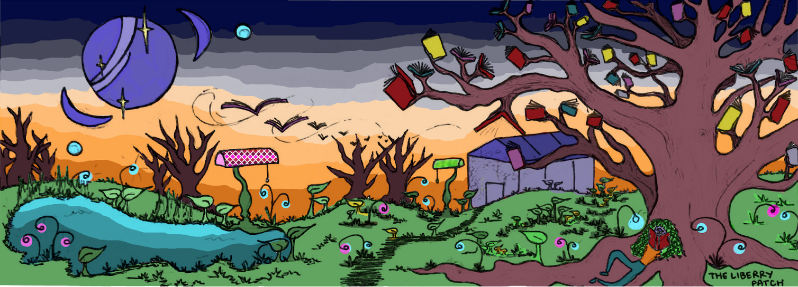
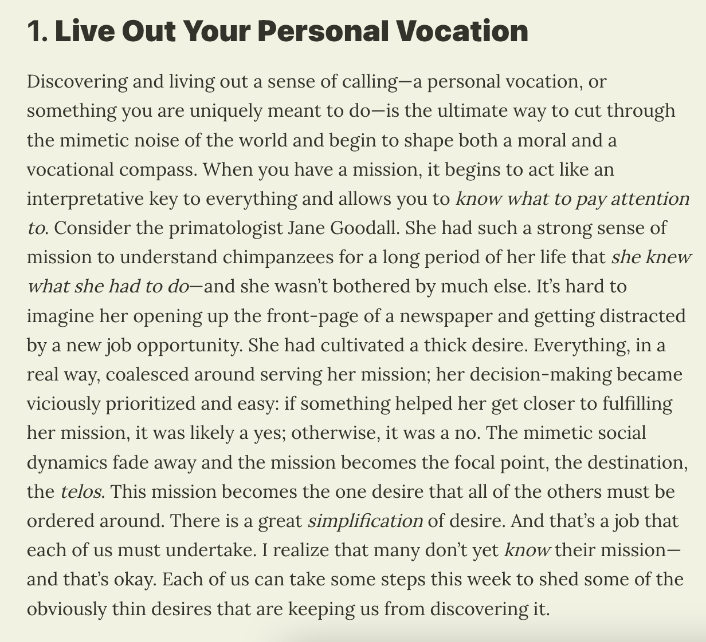
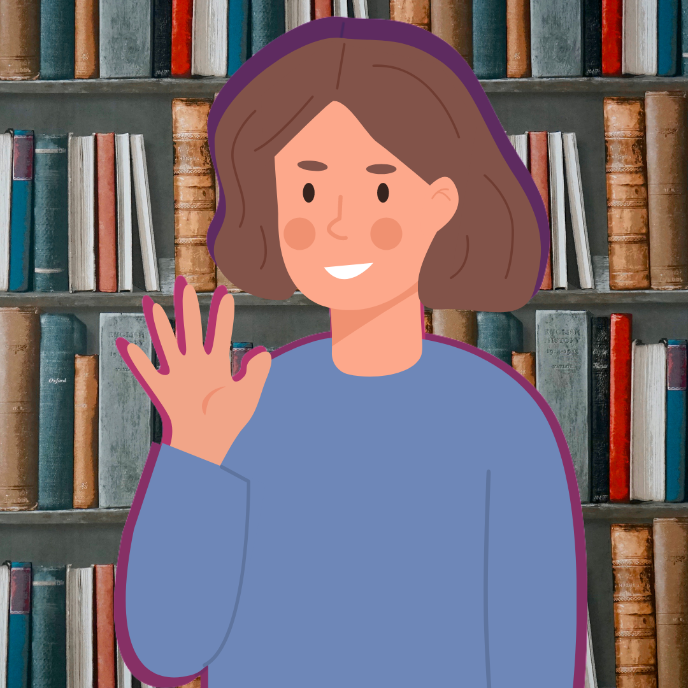

My final thoughts:
In INFO 203, when we made our wordpress blog, I created this image as my blog banner. Summed up in this picture are my values: creativity, exploration, imagination, and nature appreciation. In this program, I've learned a lot of new skills. I've also learned how to apply my own values to librarianship.

Left: In this blog post, Luke Burgis wrote as advice to "live out your personal vocation." He further explains that "When you have a mission, it begins to act like an interpretative key to everything and allows you to know what to pay attention to" (The Fourth Wall). This blog post may require a subscription to read. If so: to the left is a picture of the section I reference here. I do feel like librarianship is my "interpretive key to everything." I really enjoy hobbies like running, playing the piano, gardening, and hiking. I also enjoy participating in my science fiction writing group, and making art projects with my sister. In these extra-curriculars, I find myself employing the concepts that I learned in reference and information literacy, where we discussed how to 'determine the patron's real question' and how to teach patrons how to teach themselves. I also have learned to embrace my interdisciplinary side. I studied the health sciences and history in college, and didn't expect these interests to overlap in a future career. Except that now, I am a library assistant at a health sciences college, and I get to create projects like "health heroes from history." Librarianship has combined many aspects of my life into one common thread.
Skills I use most:
I'm grateful for the skills I've learned in this program: library instruction and reference, advocacy, patron assistance, and coding. I've learned that instructing is different than lecturing: library instruction is interactive and engaging and makes learning a more natural process. I also learned that librarians need to advocate for their library and its resources. In two courses, booktalking & booktrailering and reference services, I learned how to use my creative side in library outreach, and how to encourage patrons to participate in library services.
My favorite courses:
- INFO 254: Information literacy & learning
- INFO 210: Reference services
- INFO 240: Information technology, tools & applications (HTML & CSS)
- INFO 246-11: (SQL, Python, Javascript & PHP)
- INFO 285: Applied research methods: Research in academic libraries
Workplaces where I've used the skills taught in this program:
- Customer service employee (2015 - 2019)
- Substitute teaching (2020)
- Library assistant - Health sciences undergraduate program
- Park aide - CA State Parks (Sutter's Fort & State Indian Museum)
Thanks for reading!
I hope my experience in this program can help someone else. I am really grateful that this online MLIS program exists and that I've made it through. I look forward to the next step in my library career.